Custom-built linked lists
Learning Outcomes
- Understand the internal operation of recursively defined lists
- Be able to create standard list operations for a recursivly defined list
- Understand the time costs of various list operations
Author: Gaurav Gupta
Custom built linkedlist
Now that we have taken a look at the Node class, we can construct a class that has a single Node object as instance variable.
public class MyLinkedList {
public Node head;
}
As we saw in the last section, this node holds a reference to another node. That node could be null or could be a valid instance. A sample client:
public class Client {
public static void main(String[] args) {
MyLinkedList list1 = new MyLinkedList();
Node p = new Node(10, null);
list1.head = p;
MyLinkedList list2 = new MyLinkedList();
Node q = new Node(40, null);
Node r = new Node(20, q);
list2.head = r;
}
}
list1has a single instance variable,head, that refers top, which in turn, refers tonull.list1.head -> p -> null
list2has a single instance variable,head, that refers tor, which in turn refers toq, which in turn, refers tonull.list2.head -> r -> q -> null
The idea is that if we start at head, we can visit every node in the chain until we hit null.
public class MyLinkedList {
public Node head;
public void display() {
Node current = head; //create temporary reference to update
while(current != null) {
System.out.println(current.data); //use current for ... whatever
current = current.next; //move it to the next node
}
}
}
The same logic can be used to add up all the items in the list, as,
//in class MyLinkedList
public int sum() {
Node current = head; //create temporary reference to update
int result = 0;
while(current != null) {
result = result + current.data;
current = current.next; //move it to the next node
}
return result;
}
Size of the list
We can add a method to determine size of the list, as,
//in class MyLinkedList
public int size() {
Node current = head; //create temporary reference to update
int count = 0;
while(current != null) {
count = count + 1;
current = current.next; //move it to the next node
}
return count;
}
Checking if list is empty
If the list is empty, head is null
public boolean isEmpty() {
return head == null; //if head is null, return true, else return false
}
Adding an item at the front
public void addToFront(int item) {
Node temp = new Node(item, head);
head = temp;
}
Note that if the list is empty, head is null, and so the newly added node has null as next node, which is correct.
If the list is not empty, temp has the current head as the next node, and then head is updated to refer to the added node.
Removing the first item in the list
We also want to return the item removed.
If head is null, nothing can be removed, so we return null.
If head is not null, we store the item in a variable, update head to refer to the node after the current head and return the item removed
public Integer removeFirst() { //Integer so as to return null as error code
if(head == null) {
return null;
}
int result = head.data;
head = head.next; //update head
return result;
}
Indexing items
Homework
Task 1
Add an instance method to class MyLinkedList that returns true if the list is empty, false otherwise.
Task 2
Add an instance method to class MyLinkedList that returns the first item in the list, if any, null otherwise. Based on this (null is returned if list is empty), think about the return type of the method before anything else.
Task 3
Add an instance method to class MyLinkedList that returns the sum of all items in the list. Return 0 if the list is empty.
Task 4
Add an instance method to class MyLinkedList that returns the sum of all positive items in the list. Return 0 if the list is empty or none of the items are positive.
Task 5
Add an instance method to class MyLinkedList that returns true if all the items of the list are even numbers, false otherwise. Return true if the list is empty.
Important methods in custom linkedlist
This section will assumes the following definition of MyLinkedList class;
public class MyLinkedList {
public Node head;
public void addToFront(int item) {
//create a node that has head as the next node
Node node = new Node(item, head);
//update head to new node
head = node;
}
public int size() {
Node current = head;
while(current != null) {
count++;
current = current.next;
}
return count;
}
public boolean itemExistsAt(int idx) {
return idx >= 0 && idx < size();
}
public String toString() {
Node current = head;
String result = "List: ";
while(current != null) {
result = result + current.data + " ";
current = current.next;
}
return result+"\n";
}
}
Getting an item at a specific index (if any)
Method header
/**
* @param idx: index of the node whose value should be returned
* @return: data value in the node if node exists, null otherwise
*/
public Integer get(int idx)
Steps involved:
- check if an item exists at the given index using
itemExistsAt(int)- if not, return
null - if it does, go to the item and return its value.
- if not, return
Now “going” to the item requires us to start at head and move forward using next, one at a time. How many times should we move forward by one?
Lets say, the list is head -> 10 -> 70 -> 20 -> 90 -> null.
idx = 0 => move 0 times idx = 1 => move 1 time idx = 2 => move 2 times …
In general, we need to move forward idx times.
Node current = head;
for(int i=0; i < idx; i++) {
current = current.next;
}
When the loop terminates, current holds a reference to the Node object whose value needs to be returned.
return current.data;
Putting it together, get(int) is defined as:
public Integer get(int idx) {
if(itemExistsAt(idx) == false) {
return null;
}
//guaranteed that item DOES exist at index idx
Node current = head;
for(int i=0; i < idx; i++) {
current = current.next;
}
return current.data;
}
Removing (and returning) an item at a specific index (if any)
Method header
/**
* @param idx: index of the node which should be removed
* @return: data value in the node if node existed and is now removed, null otherwise
*/
public Integer remove(int idx)
In the same manner as get(int), we will first check if an item exists at the given index. If it doesn’t, we return null.
if(itemExistsAt(idx) == false) {
return null;
}
If it exists, there are two sub-cases.
Case 1: removing item at index 0 (head is updated)
if(idx == 0) {
int itemRemoved = head.data;
head = head.next;
return itemRemoved;
}
Case 2: removing item at index 1 or beyond (head is not updated)
We need a reference to the node BEFORE the node to be removed. That is, the item at index idx - 1.
Node current = head;
for(int i=0; i < idx - 1; i++) { //moved forward idx-1 times
current = current.next;
}
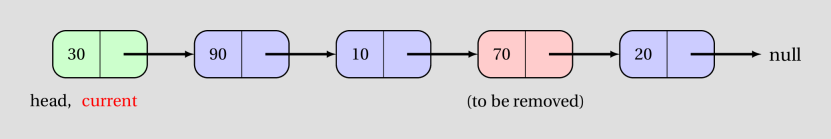
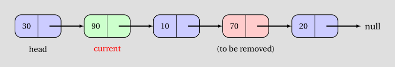
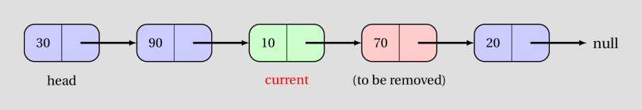
Then we make a backup copy of the value of the node to be removed.
Node nodeToRemove = current.next;
int itemRemoved = nodeToRemove.data;
}
Finally, we make the node before the node to be removed refer (using next) to the node after the node to be removed, and return the value of the node removed.
current.next = nodeToRemove.next;
return itemRemoved;
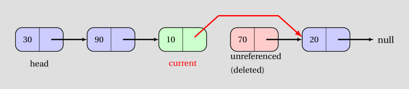
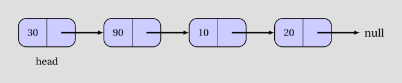
Putting it together, remove(int) is defined as:
public Integer remove(int idx) {
if(itemExistsAt(idx) == false) {
return null;
}
if(idx == 0) {
int itemRemoved = head.data;
head = head.next;
return itemRemoved;
}
Node current = head;
for(int i=0; i < idx - 1; i++) { //moved forward idx-1 times
current = current.next;
}
Node nodeToRemove = current.next;
int itemRemoved = nodeToRemove.data;
current.next = nodeToRemove.next;
return itemRemoved;
}
Inserting an item at a given index
Method header
/**
* @param idx: index at which node should be inserted
* @param value: data value of the node to be inserted
* @return: true if node can be inserted at given index, false otherwise
*/
public boolean insert(int idx, int value)
In the same manner as get(int) and remove(int), we will first check if the item can be inserted at the given index.
If the list currently contains 4 items (at indices 0 through 3), a new node can be inserted at index 0 (before the first item) through 4 (after the last item).
Thus, the following condition checks if the item cannot be inserted and the method can return false.
if(idx < 0 || idx > size()) {
return false;
}
Now there are two sub-cases.
Case 1: inserting item at index 0 (head is updated)
Node node = new Node(value, null);
if(idx == 0) {
node.next = head;
head = node;
}
Case 2: inserting item at index 1 or beyond (head is not updated)
We get a reference to the item before where the item needs to be inserted.
Node current = head;
for(int i=0; i < idx - 1; i++) { //moved forward idx-1 times
current = current.next;
}
In the diagrams, we illustrate the process when inserting value 50 between 10 and 70.
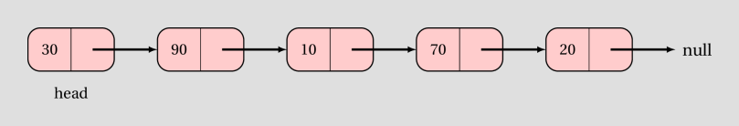
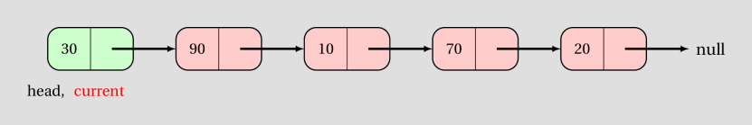
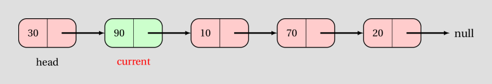
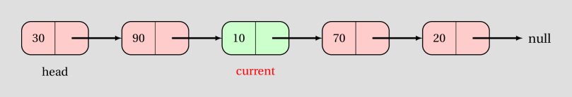
Finally, we insert the new node after it.
Node itemAfter = current.next; //itemAfter will be null if node added to end of list
current.next = node;
node.next = itemAfter; //node.next will be null if node added to end of list
return true;
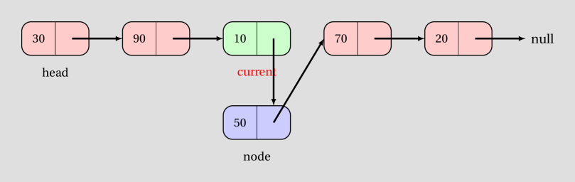
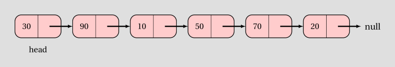
Putting it together, insert(int, int) is defined as:
public boolean insert(int idx, int value) {
if(idx < 0 || idx > size()) {
return false;
}
Node node = new Node(value, null);
if(idx == 0) {
node.next = head;
head = node;
}
Node current = head;
for(int i=0; i < idx - 1; i++) { //moved forward idx-1 times
current = current.next;
}
Node itemAfter = current.next; //itemAfter will be null if node added to end of list
current.next = node;
node.next = itemAfter; //node.next will be null if node added to end of list
return true;
}
Homework - 3
Task 1 (advanced)
Add an instance method to class MyLinkedList that reverses the list represented by the calling object. If the state of the list before calling the method is head -> 10 -> 70 -> 20 -> 90 -> null, its state, after the method executes, should be head -> 90 -> 20 -> 70 -> 10 -> null.